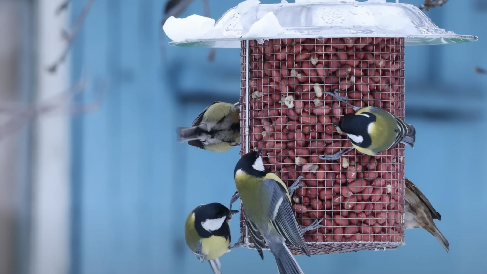

Бункерная кормушка — удобный способ подкормить синиц и других мелких птиц во дворе, саду или на даче. Семена насыпаются в сетчатый бункер и расходуются постепенно, а птицы достают их прямо через ячейки.
Размер ячейки подобран для семян подсолнечника и арахиса. Объём бункера около 1–1,5 кг, поэтому подкармливать птиц можно реже.
Кормушка подвешивается за стальную петлю с карабином на ветку, крюк или перекладину. Крыша из нержавеющей стали диаметром 20 см закрывает корм сверху, а сама кормушка не заносится снегом.
Купить сетчатую кормушку для птиц в Беларуси можно через объявление на Куфаре, отправляем Европочтой по всей стране. Цена — 70 BYN. Для сала и жировых блоков посмотрите также деревянную кормушку «Сальница».